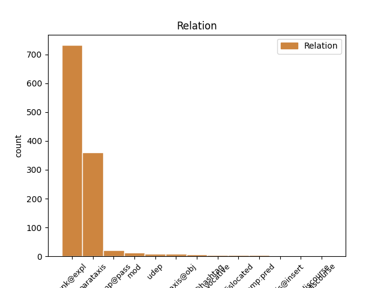
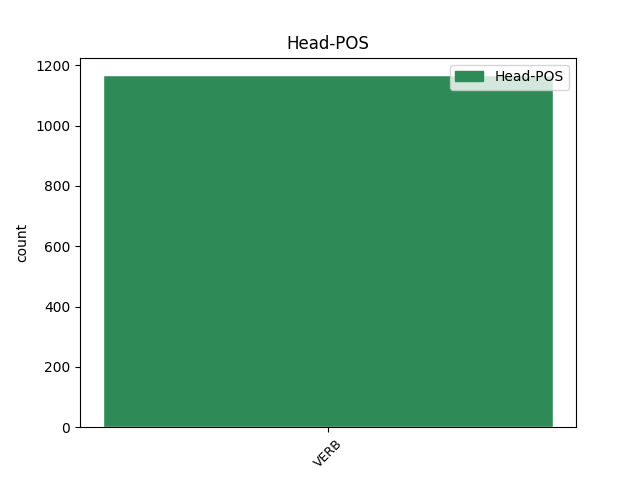
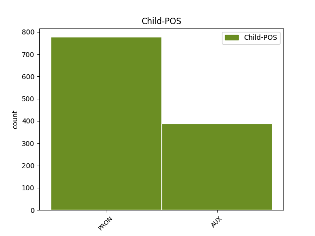

Distribution of features within this leaf



Agreement Rules sorted by frequency.
- When the dependent token is the unk@expl(unk@expl) of the head token, and the head token is VERB and the dependent token is PRON.
1 Fa _ _ _ _ 0 _ _ _
2 ridere _ _ _ _ 0 _ _ _
3 vedere _ _ _ _ 0 _ _ _
4 come _ _ _ _ 0 _ _ _
5 si si PRON PC Clitic=Yes|Person=3|PronType=Prs 6 unk@expl _ _
6 spremono spremere VERB V Mood=Ind|Number=Plur|Person=3|Tense=Pres|VerbForm=Fin 0 _ _ _
7 quel _ _ _ _ 0 _ _ _
8 poco _ _ _ _ 0 _ _ _
9 di _ _ _ _ 0 _ _ _
10 cervello _ _ _ _ 0 _ _ _
11 per _ _ _ _ 0 _ _ _
12 capire _ _ _ _ 0 _ _ _
13 il _ _ _ _ 0 _ _ _
14 significato _ _ _ _ 0 _ _ _
15 di _ _ _ _ 0 _ _ _
16 un' _ _ _ _ 0 _ _ _
17 occupazione _ _ _ _ 0 _ _ _
18 . _ _ _ _ 0 _ _ _
19 Senza _ _ _ _ 0 _ _ _
20 midollo _ _ _ _ 0 _ _ _
21 , _ _ _ _ 0 _ _ _
22 ne _ _ _ _ 0 _ _ _
23 dignità _ _ _ _ 0 _ _ _
24 . _ _ _ _ 0 _ _ _
1 Mi _ _ _ _ 0 _ _ _
2 risulta risultare VERB V Mood=Ind|Number=Sing|Person=3|Tense=Pres|VerbForm=Fin 0 _ _ _
3 difficile _ _ _ _ 0 _ _ _
4 dir _ _ _ _ 0 _ _ _
5 lo _ _ _ _ 0 _ _ _
6 , _ _ _ _ 0 _ _ _
7 ma _ _ _ _ 0 _ _ _
8 le _ _ _ _ 0 _ _ _
9 più _ _ _ _ 0 _ _ _
10 lucide _ _ _ _ 0 _ _ _
11 analisi _ _ _ _ 0 _ _ _
12 su _ _ _ _ 0 _ _ _
13 il _ _ _ _ 0 _ _ _
14 tremendo _ _ _ _ 0 _ _ _
15 orizzonte _ _ _ _ 0 _ _ _
16 di _ _ _ _ 0 _ _ _
17 governo _ _ _ _ 0 _ _ _
18 Monti _ _ _ _ 0 _ _ _
19 - _ _ _ _ 0 _ _ _
20 Draghi _ _ _ _ 0 _ _ _
21 le _ _ _ _ 0 _ _ _
22 ha avere AUX VA Mood=Ind|Number=Sing|Person=3|Tense=Pres|VerbForm=Fin 2 parataxis _ _
23 fatte _ _ _ _ 0 _ _ _
24 Il _ _ _ _ 0 _ _ _
25 Giornale _ _ _ _ 0 _ _ _
26 . _ _ _ _ 0 _ _ _
1 @user1 _ _ _ _ 0 _ _ _
2 @user2 _ _ _ _ 0 _ _ _
3 Non _ _ _ _ 0 _ _ _
4 si si PRON PC Clitic=Yes|Person=3|PronType=Prs 5 comp@pass _ _
5 fanno fare VERB V Mood=Ind|Number=Plur|Person=3|Tense=Pres|VerbForm=Fin 0 _ _ _
6 così _ _ _ _ 0 _ _ _
7 i _ _ _ _ 0 _ _ _
8 cuori _ _ _ _ 0 _ _ _
9 su _ _ _ _ 0 _ _ _
10 Twitter _ _ _ _ 0 _ _ _
11 . _ _ _ _ 0 _ _ _
12 - _ _ _ _ 0 _ _ _
13 . _ _ _ _ 0 _ _ _
14 alt _ _ _ _ 0 _ _ _
15 + _ _ _ _ 0 _ _ _
16 3 _ _ _ _ 0 _ _ _
17 di _ _ _ _ 0 _ _ _
18 la _ _ _ _ 0 _ _ _
19 tastiera _ _ _ _ 0 _ _ _
20 di _ _ _ _ 0 _ _ _
21 i _ _ _ _ 0 _ _ _
22 numeri _ _ _ _ 0 _ _ _
23 affianco _ _ _ _ 0 _ _ _
24 ♥ _ _ _ _ 0 _ _ _
1 @user _ _ _ _ 0 _ _ _
2 beh _ _ _ _ 0 _ _ _
3 , _ _ _ _ 0 _ _ _
4 beate _ _ _ _ 0 _ _ _
5 loro _ _ _ _ 0 _ _ _
6 ! _ _ _ _ 0 _ _ _
7 Io _ _ _ _ 0 _ _ _
8 nn _ _ _ _ 0 _ _ _
9 possiedo possedere VERB V Mood=Ind|Number=Sing|Person=1|Tense=Pres|VerbForm=Fin 0 _ _ _
10 nulla _ _ _ _ 0 _ _ _
11 di _ _ _ _ 0 _ _ _
12 tutto _ _ _ _ 0 _ _ _
13 ciò _ _ _ _ 0 _ _ _
14 .. _ _ _ _ 0 _ _ _
15 Devo dovere AUX VM Mood=Ind|Number=Sing|Person=1|Tense=Pres|VerbForm=Fin 9 mod _ _
16 preoccupar _ _ _ _ 0 _ _ _
17 mi _ _ _ _ 0 _ _ _
18 ?! _ _ _ _ 0 _ _ _
19 #ironiaportamivia _ _ _ _ 0 _ _ _
1 @user _ _ _ _ 0 _ _ _
2 questo _ _ _ _ 0 _ _ _
3 governo _ _ _ _ 0 _ _ _
4 Monti _ _ _ _ 0 _ _ _
5 mi _ _ _ _ 0 _ _ _
6 piace _ _ _ _ 0 _ _ _
7 quasi _ _ _ _ 0 _ _ _
8 tutto _ _ _ _ 0 _ _ _
9 . _ _ _ _ 0 _ _ _
10 Sono _ _ _ _ 0 _ _ _
11 anziani _ _ _ _ 0 _ _ _
12 , _ _ _ _ 0 _ _ _
13 mutilati _ _ _ _ 0 _ _ _
14 , _ _ _ _ 0 _ _ _
15 ambasciatori _ _ _ _ 0 _ _ _
16 , _ _ _ _ 0 _ _ _
17 amministratori _ _ _ _ 0 _ _ _
18 delegati _ _ _ _ 0 _ _ _
19 . _ _ _ _ 0 _ _ _
20 Manco mancare VERB V Mood=Ind|Number=Sing|Person=1|Tense=Pres|VerbForm=Fin 0 _ _ _
21 solo _ _ _ _ 0 _ _ _
22 io io PRON PE Number=Sing|Person=1|PronType=Prs 20 udep _ _
23 :3 _ _ _ _ 0 _ _ _
1 governo _ _ _ _ 0 _ _ _
2 #Monti _ _ _ _ 0 _ _ _
3 inizia _ _ _ _ 0 _ _ _
4 a _ _ _ _ 0 _ _ _
5 sbagliare _ _ _ _ 0 _ _ _
6 le _ _ _ _ 0 _ _ _
7 parole _ _ _ _ 0 _ _ _
8 . _ _ _ _ 0 _ _ _
9 La _ _ _ _ 0 _ _ _
10 sobrietà _ _ _ _ 0 _ _ _
11 non _ _ _ _ 0 _ _ _
12 basta bastare VERB V Mood=Ind|Number=Sing|Person=3|Tense=Pres|VerbForm=Fin 0 _ _ _
13 più _ _ _ _ 0 _ _ _
14 : _ _ _ _ 0 _ _ _
15 il _ _ _ _ 0 _ _ _
16 trend _ _ _ _ 0 _ _ _
17 è essere AUX V Mood=Ind|Number=Sing|Person=3|Tense=Pres|VerbForm=Fin 12 parataxis@hashtag _ _
18 lo _ _ _ _ 0 _ _ _
19 #sfigato _ _ _ _ 0 _ _ _
20 che _ _ _ _ 0 _ _ _
21 sogna _ _ _ _ 0 _ _ _
22 il _ _ _ _ 0 _ _ _
23 #postofisso _ _ _ _ 0 _ _ _
24 e _ _ _ _ 0 _ _ _
25 la _ _ _ _ 0 _ _ _
26 #monotonia _ _ _ _ 0 _ _ _
27 ? _ _ _ _ 0 _ _ _
28 eh _ _ _ _ 0 _ _ _
29 . _ _ _ _ 0 _ _ _
1 Lo _ _ _ _ 0 _ _ _
2 dice dire VERB V Mood=Ind|Number=Sing|Person=3|Tense=Pres|VerbForm=Fin 0 _ _ _
3 lo _ _ _ _ 0 _ _ _
4 spread _ _ _ _ 0 _ _ _
5 : _ _ _ _ 0 _ _ _
6 il _ _ _ _ 0 _ _ _
7 premier _ _ _ _ 0 _ _ _
8 spagnolo _ _ _ _ 0 _ _ _
9 è essere AUX V Mood=Ind|Number=Sing|Person=3|Tense=Pres|VerbForm=Fin 2 parataxis@obj _ _
10 meglio _ _ _ _ 0 _ _ _
11 di _ _ _ _ 0 _ _ _
12 Monti _ _ _ _ 0 _ _ _
13 mario _ _ _ _ 0 _ _ _
14 monti _ _ _ _ 0 _ _ _
15 , _ _ _ _ 0 _ _ _
16 mariano _ _ _ _ 0 _ _ _
17 rajoy _ _ _ _ 0 _ _ _
18 , _ _ _ _ 0 _ _ _
19 spagna _ _ _ _ 0 _ _ _
20 , _ _ _ _ 0 _ _ _
21 itali _ _ _ _ 0 _ _ _
22 http://t.co/s9c9ZI2l _ _ _ _ 0 _ _ _
1 #Disabato _ _ _ _ 0 _ _ _
2 , _ _ _ _ 0 _ _ _
3 #Losappio _ _ _ _ 0 _ _ _
4 : _ _ _ _ 0 _ _ _
5 " _ _ _ _ 0 _ _ _
6 Su _ _ _ _ 0 _ _ _
7 le _ _ _ _ 0 _ _ _
8 trivellazioni _ _ _ _ 0 _ _ _
9 confidiamo confidare VERB V Mood=Ind|Number=Plur|Person=1|Tense=Pres|VerbForm=Fin 0 _ _ _
10 in _ _ _ _ 0 _ _ _
11 il _ _ _ _ 0 _ _ _
12 governo _ _ _ _ 0 _ _ _
13 #Monti _ _ _ _ 0 _ _ _
14 " _ _ _ _ 0 _ _ _
15 : _ _ _ _ 0 _ _ _
16 E _ _ _ _ 0 _ _ _
17 ora _ _ _ _ 0 _ _ _
18 non _ _ _ _ 0 _ _ _
19 ci ci PRON PC Clitic=Yes|Number=Plur|Person=1|PronType=Prs 9 parataxis _ _
20 ... _ _ _ _ 0 _ _ _
21 http://t.co/tqv6xJNk _ _ _ _ 0 _ _ _
1 Indiscrezioni _ _ _ _ 0 _ _ _
2 Governo _ _ _ _ 0 _ _ _
3 Monti _ _ _ _ 0 _ _ _
4 : _ _ _ _ 0 _ _ _
5 Passera _ _ _ _ 0 _ _ _
6 per _ _ _ _ 0 _ _ _
7 lo _ _ _ _ 0 _ _ _
8 sviluppo _ _ _ _ 0 _ _ _
9 pare parere VERB V Mood=Ind|Number=Sing|Person=3|Tense=Pres|VerbForm=Fin 0 _ _ _
10 sia essere AUX V Mood=Sub|Number=Sing|Person=3|Tense=Pres|VerbForm=Fin 9 comp:pred _ _
11 una _ _ _ _ 0 _ _ _
12 richiesta _ _ _ _ 0 _ _ _
13 particolare _ _ _ _ 0 _ _ _
14 di _ _ _ _ 0 _ _ _
15 Berlusconi _ _ _ _ 0 _ _ _
16 . _ _ _ _ 0 _ _ _
1 Mercato _ _ _ _ 0 _ _ _
2 : _ _ _ _ 0 _ _ _
3 #Joaquin _ _ _ _ 0 _ _ _
4 sempre _ _ _ _ 0 _ _ _
5 più _ _ _ _ 0 _ _ _
6 in _ _ _ _ 0 _ _ _
7 partenza _ _ _ _ 0 _ _ _
8 , _ _ _ _ 0 _ _ _
9 mentre _ _ _ _ 0 _ _ _
10 anche _ _ _ _ 0 _ _ _
11 #Vecino _ _ _ _ 0 _ _ _
12 pare parere VERB V Mood=Ind|Number=Sing|Person=3|Tense=Pres|VerbForm=Fin 0 _ _ _
13 sia essere AUX V Mood=Sub|Number=Sing|Person=3|Tense=Pres|VerbForm=Fin 12 udep _ _
14 in _ _ _ _ 0 _ _ _
15 partenza _ _ _ _ 0 _ _ _
16 verso _ _ _ _ 0 _ _ _
17 #Napoli _ _ _ _ 0 _ _ _
18 . _ _ _ _ 0 _ _ _
19 Si _ _ _ _ 0 _ _ _
20 parla _ _ _ _ 0 _ _ _
21 di _ _ _ _ 0 _ _ _
22 ... _ _ _ _ 0 _ _ _
23 http://t.co/KSBqZ4xCsZ _ _ _ _ 0 _ _ _
1 Un _ _ _ _ 0 _ _ _
2 ringraziamento _ _ _ _ 0 _ _ _
3 a _ _ _ _ 0 _ _ _
4 tutti _ _ _ _ 0 _ _ _
5 i _ _ _ _ 0 _ _ _
6 clienti _ _ _ _ 0 _ _ _
7 , _ _ _ _ 0 _ _ _
8 a _ _ _ _ 0 _ _ _
9 quelli _ _ _ _ 0 _ _ _
10 ke _ _ _ _ 0 _ _ _
11 vengono _ _ _ _ 0 _ _ _
12 da _ _ _ _ 0 _ _ _
13 anni _ _ _ _ 0 _ _ _
14 , _ _ _ _ 0 _ _ _
15 a _ _ _ _ 0 _ _ _
16 quelli _ _ _ _ 0 _ _ _
17 nuovi _ _ _ _ 0 _ _ _
18 e _ _ _ _ 0 _ _ _
19 a _ _ _ _ 0 _ _ _
20 quelli _ _ _ _ 0 _ _ _
21 ke _ _ _ _ 0 _ _ _
22 lo lo PRON PC Clitic=Yes|Gender=Masc|Number=Sing|Person=3|PronType=Prs 23 comp:pred _ _
23 diventeranno diventare VERB V Mood=Ind|Number=Plur|Person=3|Tense=Fut|VerbForm=Fin 0 _ _ _
24 ... _ _ _ _ 0 _ _ _
25 http://t.co/LyqnZvLerb _ _ _ _ 0 _ _ _
1 Lei _ _ _ _ 0 _ _ _
2 " _ _ _ _ 0 _ _ _
3 ma _ _ _ _ 0 _ _ _
4 tu _ _ _ _ 0 _ _ _
5 ora _ _ _ _ 0 _ _ _
6 saresti _ _ _ _ 0 _ _ _
7 pronta _ _ _ _ 0 _ _ _
8 per _ _ _ _ 0 _ _ _
9 un _ _ _ _ 0 _ _ _
10 amore _ _ _ _ 0 _ _ _
11 ? _ _ _ _ 0 _ _ _
12 " _ _ _ _ 0 _ _ _
13 Io io PRON PE Number=Sing|Person=1|PronType=Prs 20 parataxis@insert _ _
14 " _ _ _ _ 0 _ _ _
15 se _ _ _ _ 0 _ _ _
16 devo _ _ _ _ 0 _ _ _
17 domandar _ _ _ _ 0 _ _ _
18 me _ _ _ _ 0 _ _ _
19 lo _ _ _ _ 0 _ _ _
20 immagino immaginare VERB V Mood=Ind|Number=Sing|Person=1|Tense=Pres|VerbForm=Fin 0 _ _ _
21 io _ _ _ _ 0 _ _ _
22 sia _ _ _ _ 0 _ _ _
23 già _ _ _ _ 0 _ _ _
24 preda _ _ _ _ 0 _ _ _
25 di _ _ _ _ 0 _ _ _
26 l' _ _ _ _ 0 _ _ _
27 incantesimo _ _ _ _ 0 _ _ _
28 di _ _ _ _ 0 _ _ _
29 l' _ _ _ _ 0 _ _ _
30 orologio _ _ _ _ 0 _ _ _
31 biologico _ _ _ _ 0 _ _ _
32 " _ _ _ _ 0 _ _ _
1 Questa _ _ _ _ 0 _ _ _
2 Roma _ _ _ _ 0 _ _ _
3 niente _ _ _ _ 0 _ _ _
4 male _ _ _ _ 0 _ _ _
5 ci _ _ _ _ 0 _ _ _
6 fa _ _ _ _ 0 _ _ _
7 fare _ _ _ _ 0 _ _ _
8 un _ _ _ _ 0 _ _ _
9 buon _ _ _ _ 0 _ _ _
10 Natale _ _ _ _ 0 _ _ _
11 , _ _ _ _ 0 _ _ _
12 e _ _ _ _ 0 _ _ _
13 chi _ _ _ _ 0 _ _ _
14 invece _ _ _ _ 0 _ _ _
15 non _ _ _ _ 0 _ _ _
16 fa fare VERB V Mood=Ind|Number=Sing|Person=3|Tense=Pres|VerbForm=Fin 0 _ _ _
17 sconti _ _ _ _ 0 _ _ _
18 è essere AUX V Mood=Ind|Number=Sing|Person=3|Tense=Pres|VerbForm=Fin 16 dislocated _ _
19 sto _ _ _ _ 0 _ _ _
20 cazzo _ _ _ _ 0 _ _ _
21 de _ _ _ _ 0 _ _ _
22 Mario _ _ _ _ 0 _ _ _
23 Monti _ _ _ _ 0 _ _ _
24 ! _ _ _ _ 0 _ _ _
1 Il _ _ _ _ 0 _ _ _
2 Pd _ _ _ _ 0 _ _ _
3 appoggia _ _ _ _ 0 _ _ _
4 il _ _ _ _ 0 _ _ _
5 Governo _ _ _ _ 0 _ _ _
6 Monti _ _ _ _ 0 _ _ _
7 . _ _ _ _ 0 _ _ _
8 E _ _ _ _ 0 _ _ _
9 io io PRON PE Number=Sing|Person=1|PronType=Prs 13 dislocated _ _
10 di _ _ _ _ 0 _ _ _
11 questo _ _ _ _ 0 _ _ _
12 ne _ _ _ _ 0 _ _ _
13 vado andare VERB V Mood=Ind|Number=Sing|Person=1|Tense=Pres|VerbForm=Fin 0 _ _ _
14 fiero _ _ _ _ 0 _ _ _
15 . _ _ _ _ 0 _ _ _
16 A _ _ _ _ 0 _ _ _
17 lo _ _ _ _ 0 _ _ _
18 stesso _ _ _ _ 0 _ _ _
19 tempo _ _ _ _ 0 _ _ _
20 , _ _ _ _ 0 _ _ _
21 però _ _ _ _ 0 _ _ _
22 , _ _ _ _ 0 _ _ _
23 è _ _ _ _ 0 _ _ _
24 totalmente _ _ _ _ 0 _ _ _
25 incoerente _ _ _ _ 0 _ _ _
26 ... _ _ _ _ 0 _ _ _
27 http://t.co/C1wM5tOW _ _ _ _ 0 _ _ _
1 Spesso _ _ _ _ 0 _ _ _
2 #Grillo _ _ _ _ 0 _ _ _
3 esagera esagerare VERB V Mood=Ind|Number=Sing|Person=3|Tense=Pres|VerbForm=Fin 0 _ _ _
4 , _ _ _ _ 0 _ _ _
5 questo _ _ _ _ 0 _ _ _
6 è essere AUX V Mood=Ind|Number=Sing|Person=3|Tense=Pres|VerbForm=Fin 3 parataxis@insert _ _
7 verissimo _ _ _ _ 0 _ _ _
8 . _ _ _ _ 0 _ _ _
9 Ciò _ _ _ _ 0 _ _ _
10 non _ _ _ _ 0 _ _ _
11 toglie _ _ _ _ 0 _ _ _
12 , _ _ _ _ 0 _ _ _
13 però _ _ _ _ 0 _ _ _
14 , _ _ _ _ 0 _ _ _
15 che _ _ _ _ 0 _ _ _
16 il _ _ _ _ 0 _ _ _
17 #M5S _ _ _ _ 0 _ _ _
18 a _ _ _ _ 0 _ _ _
19 il _ _ _ _ 0 _ _ _
20 momento _ _ _ _ 0 _ _ _
21 sia _ _ _ _ 0 _ _ _
22 l' _ _ _ _ 0 _ _ _
23 unica _ _ _ _ 0 _ _ _
24 , _ _ _ _ 0 _ _ _
25 vera _ _ _ _ 0 _ _ _
26 alternativa _ _ _ _ 0 _ _ _
27 a _ _ _ _ 0 _ _ _
28 la _ _ _ _ 0 _ _ _
29 Banda _ _ _ _ 0 _ _ _
30 Bassotti _ _ _ _ 0 _ _ _
31 . _ _ _ _ 0 _ _ _
Disagree Examples:
1 #Grillo _ _ _ _ 0 _ _ _
2 a _ _ _ _ 0 _ _ _
3 #saonara _ _ _ _ 0 _ _ _
4 C' ci PRON PC Clitic=Yes|Number=Plur|Person=1|PronType=Prs 5 unk@expl _ SpaceAfter=No
5 è essere VERB V Mood=Ind|Number=Sing|Person=3|Tense=Pres|VerbForm=Fin 0 _ _ _
6 gente _ _ _ _ 0 _ _ _
7 ! _ _ _ _ 0 _ _ _
8 robe _ _ _ _ 0 _ _ _
9 da _ _ _ _ 0 _ _ _
10 comizio _ _ _ _ 0 _ _ _
11 di _ _ _ _ 0 _ _ _
12 altri _ _ _ _ 0 _ _ _
13 tempi _ _ _ _ 0 _ _ _
14 . _ _ _ _ 0 _ _ _
15 Bene _ _ _ _ 0 _ _ _
16 . _ _ _ _ 0 _ _ _
17 Speriamo _ _ _ _ 0 _ _ _
18 che _ _ _ _ 0 _ _ _
19 a _ _ _ _ 0 _ _ _
20 cambiare _ _ _ _ 0 _ _ _
21 sia _ _ _ _ 0 _ _ _
22 soprattutto _ _ _ _ 0 _ _ _
23 la _ _ _ _ 0 _ _ _
24 testa _ _ _ _ 0 _ _ _
25 di _ _ _ _ 0 _ _ _
26 la _ _ _ _ 0 _ _ _
27 gente _ _ _ _ 0 _ _ _
28 #politica _ _ _ _ 0 _ _ _
1 @user _ _ _ _ 0 _ _ _
2 L' _ _ _ _ 0 _ _ _
3 invenzione _ _ _ _ 0 _ _ _
4 di _ _ _ _ 0 _ _ _
5 Berlusconi _ _ _ _ 0 _ _ _
6 : _ _ _ _ 0 _ _ _
7 Ci ci PRON PC Clitic=Yes|Number=Plur|Person=1|PronType=Prs 8 unk@expl _ _
8 saranno essere VERB V Mood=Ind|Number=Plur|Person=3|Tense=Fut|VerbForm=Fin 0 _ _ _
9 2 _ _ _ _ 0 _ _ _
10 PDL _ _ _ _ 0 _ _ _
11 uno _ _ _ _ 0 _ _ _
12 classico _ _ _ _ 0 _ _ _
13 , _ _ _ _ 0 _ _ _
14 uno _ _ _ _ 0 _ _ _
15 zero _ _ _ _ 0 _ _ _
16 corrotti _ _ _ _ 0 _ _ _
17 . _ _ _ _ 0 _ _ _
18 Si _ _ _ _ 0 _ _ _
19 uniranno _ _ _ _ 0 _ _ _
20 dopo _ _ _ _ 0 _ _ _
21 le _ _ _ _ 0 _ _ _
22 elezioni _ _ _ _ 0 _ _ _
23 ! _ _ _ _ 0 _ _ _
24 http://t.co/vTE7YOWP _ _ _ _ 0 _ _ _
1 - _ _ _ _ 0 _ _ _
2 Mamma _ _ _ _ 0 _ _ _
3 domani _ _ _ _ 0 _ _ _
4 torno _ _ _ _ 0 _ _ _
5 . _ _ _ _ 0 _ _ _
6 Che _ _ _ _ 0 _ _ _
7 clima _ _ _ _ 0 _ _ _
8 c' ci PRON PC Clitic=Yes|Number=Plur|Person=1|PronType=Prs 9 unk@expl _ SpaceAfter=No
9 è essere VERB V Mood=Ind|Number=Sing|Person=3|Tense=Pres|VerbForm=Fin 0 _ _ _
10 a _ _ _ _ 0 _ _ _
11 Roma _ _ _ _ 0 _ _ _
12 ? _ _ _ _ 0 _ _ _
13 Fa _ _ _ _ 0 _ _ _
14 così _ _ _ _ 0 _ _ _
15 caldo _ _ _ _ 0 _ _ _
16 ? _ _ _ _ 0 _ _ _
17 - _ _ _ _ 0 _ _ _
18 Mah _ _ _ _ 0 _ _ _
19 . _ _ _ _ 0 _ _ _
20 È _ _ _ _ 0 _ _ _
21 un _ _ _ _ 0 _ _ _
22 autunnello _ _ _ _ 0 _ _ _
23 primaveretta _ _ _ _ 0 _ _ _
24 caldino _ _ _ _ 0 _ _ _
25 caldino _ _ _ _ 0 _ _ _
26 Mia _ _ _ _ 0 _ _ _
27 madre _ _ _ _ 0 _ _ _
28 è _ _ _ _ 0 _ _ _
29 Ned _ _ _ _ 0 _ _ _
30 Flanders _ _ _ _ 0 _ _ _
31 ? _ _ _ _ 0 _ _ _
1 - _ _ _ _ 0 _ _ _
2 Mamma _ _ _ _ 0 _ _ _
3 domani _ _ _ _ 0 _ _ _
4 torno tornare VERB V Mood=Ind|Number=Sing|Person=1|Tense=Pres|VerbForm=Fin 0 _ _ _
5 . _ _ _ _ 0 _ _ _
6 Che _ _ _ _ 0 _ _ _
7 clima _ _ _ _ 0 _ _ _
8 c' _ _ _ _ 0 _ _ _
9 è _ _ _ _ 0 _ _ _
10 a _ _ _ _ 0 _ _ _
11 Roma _ _ _ _ 0 _ _ _
12 ? _ _ _ _ 0 _ _ _
13 Fa _ _ _ _ 0 _ _ _
14 così _ _ _ _ 0 _ _ _
15 caldo _ _ _ _ 0 _ _ _
16 ? _ _ _ _ 0 _ _ _
17 - _ _ _ _ 0 _ _ _
18 Mah _ _ _ _ 0 _ _ _
19 . _ _ _ _ 0 _ _ _
20 È essere AUX V Mood=Ind|Number=Sing|Person=3|Tense=Pres|VerbForm=Fin 4 parataxis _ _
21 un _ _ _ _ 0 _ _ _
22 autunnello _ _ _ _ 0 _ _ _
23 primaveretta _ _ _ _ 0 _ _ _
24 caldino _ _ _ _ 0 _ _ _
25 caldino _ _ _ _ 0 _ _ _
26 Mia _ _ _ _ 0 _ _ _
27 madre _ _ _ _ 0 _ _ _
28 è _ _ _ _ 0 _ _ _
29 Ned _ _ _ _ 0 _ _ _
30 Flanders _ _ _ _ 0 _ _ _
31 ? _ _ _ _ 0 _ _ _
1 - _ _ _ _ 0 _ _ _
2 Mamma _ _ _ _ 0 _ _ _
3 domani _ _ _ _ 0 _ _ _
4 torno tornare VERB V Mood=Ind|Number=Sing|Person=1|Tense=Pres|VerbForm=Fin 0 _ _ _
5 . _ _ _ _ 0 _ _ _
6 Che _ _ _ _ 0 _ _ _
7 clima _ _ _ _ 0 _ _ _
8 c' _ _ _ _ 0 _ _ _
9 è _ _ _ _ 0 _ _ _
10 a _ _ _ _ 0 _ _ _
11 Roma _ _ _ _ 0 _ _ _
12 ? _ _ _ _ 0 _ _ _
13 Fa _ _ _ _ 0 _ _ _
14 così _ _ _ _ 0 _ _ _
15 caldo _ _ _ _ 0 _ _ _
16 ? _ _ _ _ 0 _ _ _
17 - _ _ _ _ 0 _ _ _
18 Mah _ _ _ _ 0 _ _ _
19 . _ _ _ _ 0 _ _ _
20 È _ _ _ _ 0 _ _ _
21 un _ _ _ _ 0 _ _ _
22 autunnello _ _ _ _ 0 _ _ _
23 primaveretta _ _ _ _ 0 _ _ _
24 caldino _ _ _ _ 0 _ _ _
25 caldino _ _ _ _ 0 _ _ _
26 Mia _ _ _ _ 0 _ _ _
27 madre _ _ _ _ 0 _ _ _
28 è essere AUX V Mood=Ind|Number=Sing|Person=3|Tense=Pres|VerbForm=Fin 4 parataxis _ _
29 Ned _ _ _ _ 0 _ _ _
30 Flanders _ _ _ _ 0 _ _ _
31 ? _ _ _ _ 0 _ _ _